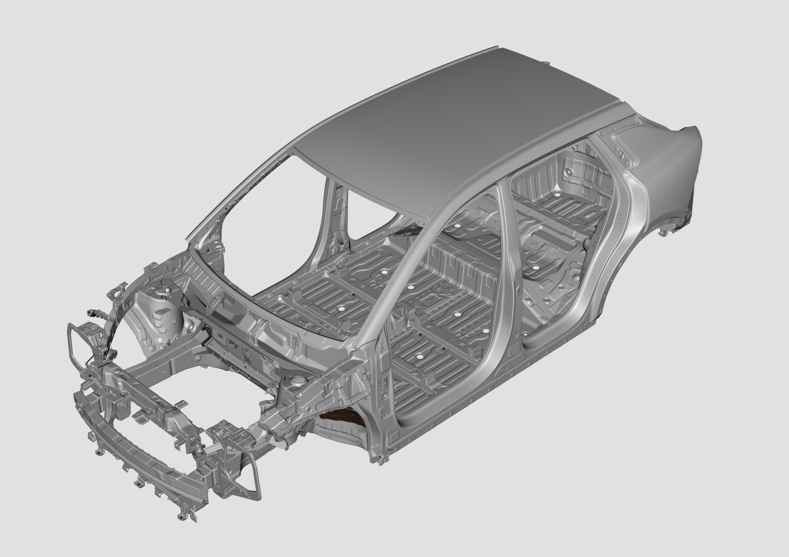

При обнаружении изгибов или деформаций на конструкционных стальных панелях они подлежат обязательной замене.
EV：

Согласно проектным требованиям, конструкционные стальные панели должны полностью соответствовать исходной геометрической форме. Если конструкционная сталь была деформирована в результате ДТП или деформированные элементы были отремонтированы и установлены повторно, такие панели могут не обеспечивать уровень безопасности, предусмотренный первоначальным проектом. При обнаружении деформированных панелей их необходимо заменить.